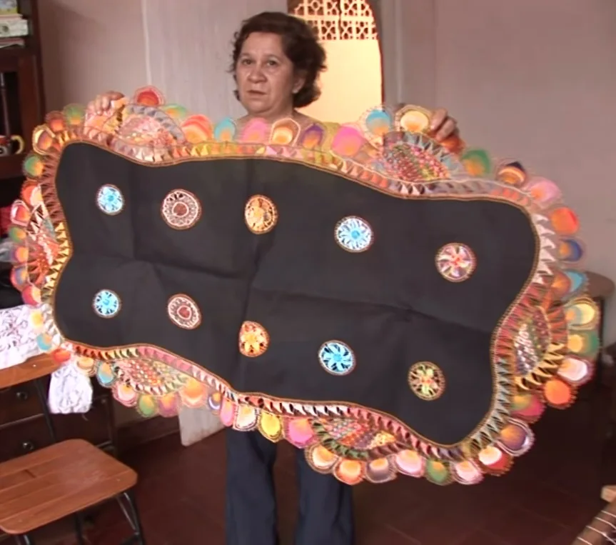
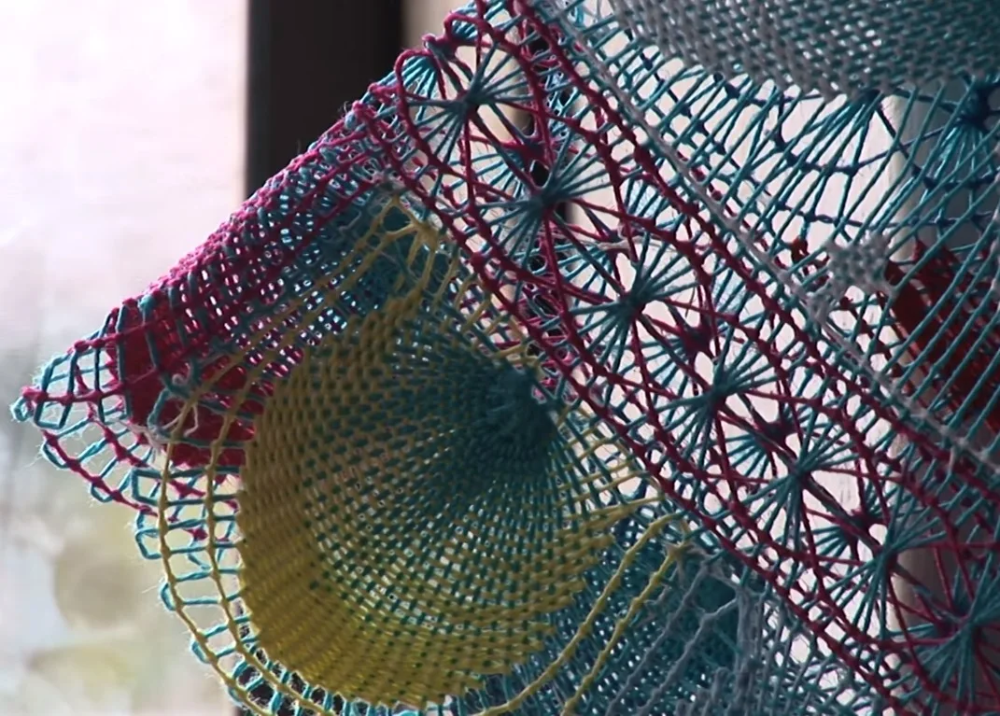

En el detalle del ñandutí, los círculos no están simplemente dibujados sobre una tela. Los hilos definen una superficie abierta donde cada motivo necesita sostenerse y encontrarse con los demás. El vacío tiene forma y la unión tiene espesor. Mirarlo como un estampado de flores pierde precisamente la inteligencia material que hace posible la pieza.
La Secretaría Nacional de Cultura del Paraguay describe el ñandutí como un encaje de agujas trabajado sobre bastidores mediante círculos radiales, con motivos geométricos o zoomorfos. Su reconocimiento patrimonial de 2019 comprende conocimientos, técnicas y métodos. La formulación importa: protege una práctica de elaboración, no únicamente un repertorio de figuras terminadas. [1]
El círculo ofrece una organización reconocible. Los radios establecen direcciones y permiten introducir diferencias dentro de una misma familia de formas. Un motivo puede aumentar la densidad en ciertas zonas y dejar otras más abiertas. Cuando varias unidades se reúnen, el problema deja de ser solo la figura individual: aparece la continuidad de una superficie hecha de centros distintos.


La primera fotografía muestra una pieza sostenida por una mujer cuya identidad no consta en la ficha consultada. La segunda permite observar el tejido de cerca. La diferencia entre ambas escalas es útil: una presenta el objeto en relación con el cuerpo y la otra revela huecos y conexiones. Ninguna autoriza a atribuir la realización a la persona fotografiada sin un dato que lo confirme.
La tensión se convierte en una pregunta de diseño porque modifica la relación entre forma y soporte. Una figura reconocible puede cambiar si la superficie se deforma; una unión necesita acompañar las partes que reúne. No hemos medido estas piezas ni reproducido su elaboración. La lectura visual permite identificar qué relaciones merecería observar durante una demostración con una artesana.
En abril de 2025, el Instituto Paraguayo de Artesanía desarrolló una experiencia entre tejedoras y orfebres de Itauguá y Luque, con mentoría de Paula Vélez. Su presentación documenta una colaboración entre ñandutí y trabajo en metal para producir joyería textil. El interés está en que técnicas con comportamientos diferentes tuvieron que encontrarse en piezas concretas. [2]
Una unión entre hilo y metal obliga a pensar peso, apoyo y uso. El metal puede concentrar fuerzas donde el encaje necesita distribuirlas; una pieza destinada al cuerpo enfrenta movimientos que una superficie expuesta no recibe de la misma manera. No es una objeción al intercambio, sino el lugar donde puede comenzar la experimentación. La afinidad visual necesita comprobarse materialmente.


La colaboración permite además distinguir transformar de añadir. Colocar un motivo reconocible sobre un accesorio ya definido puede dejar pocas decisiones al oficio. En cambio, la forma del accesorio puede cambiar si se acepta que el encaje establezca condiciones. Para valorar el resultado haría falta conocer las pruebas y las decisiones de quienes participaron, no solamente la fotografía final.
La historia del ñandutí también tiene versiones y relatos de origen diferentes, como reconoce la fuente cultural paraguaya. No hace falta elegir una leyenda y presentarla como un hecho para encontrar interés en la técnica. Los procedimientos, las piezas y sus autorías ofrecen preguntas suficientemente precisas. La continuidad de un oficio no depende de que pueda resumirse en un nacimiento único.
Lo que el ñandutí aporta a una conversación contemporánea sobre diseño es una forma de construir con relaciones visibles. Los radios orientan, los motivos varían y las uniones permiten que el conjunto exista. Una imagen puede sugerir esa lógica; conocerla exige seguir el trabajo. La pieza vale por su presencia y por el conocimiento que permite sostener tantos vacíos sin perder la forma.
Fuentes.
- Secretaría Nacional de Cultura del Paraguay — conocimientos y técnicas del encaje ñandutí, 23.07.2019
- Instituto Paraguayo de Artesanía — Joyería + Ñandutí, experiencia de co-creación de 2025
Lectura de documentación institucional y de dos imágenes de 2020. No se realizó una demostración técnica ni se atribuyen las piezas fotografiadas al taller de joyería de 2025.
Fuentes consultadas el 15.11.2026. Análisis e interpretación: RUMMOR. Edición privada para revisión.